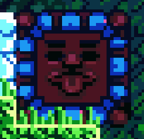

Pruun ja sinine plokk, millel on nägu. Kui mängija sööstab ploki külje sisse, siis see liigub selles suunas, kuni mängija sööstab teise külje sisse, või plokk läheb seina pihta. Kui plokk on lõpetanud liikumise, hakkab see aeglaselt oma originaal positsiooni liikuma.